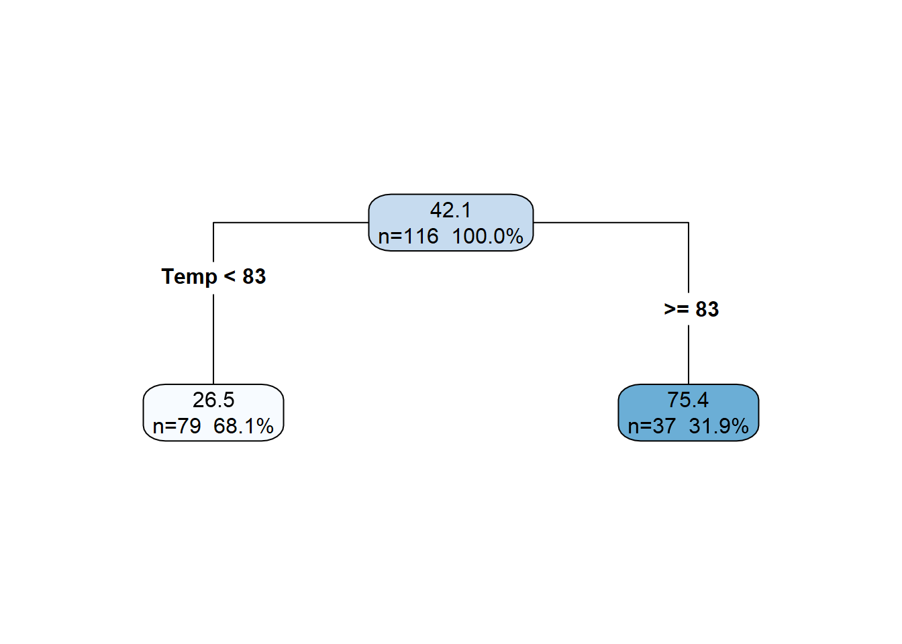
Random Forests
As with support vector machines, and as the name implies, classification and regression trees (CART) can be used for either classification or regression tasks. Again, we’ll start with regression and then move to classification.
Regression Trees
The algorithm is best explained as we walk through an example, and we’ll continue to use the airquality data set. The basic machine learning algorithm used in tree-based methods follows these steps:
Consider the entire data set including all predictors and the response. We call this the root node, and it is represented by the top center node in the figure below. The information displayed in the node includes the mean response for that node (42.1 is the mean of
Ozonefor the whole data set), the number of observations in the node (n=116), and the percent of the overall observations in the node.Iterate through each predictor, \(k\), and split the data into two subsets (referred to as the left and right child nodes) using some threshold, \(t_k\). For example, with the
airqualitydata set, the predictor and threshold could beTemp >= 83. The choice of \(k\) and \(t_k\) for a given split is the pair that increases the “purity” of the child nodes (weighted by their size) the most. We’ll explicitly define purity shortly. If you equate a data split with a decision, then at this point, we have a basic decision tree.
- Each child node in turn becomes the new parent node and the process is repeated. Below is the decision tree produced by the first two splits. Notice that the first split is on the
Temppredictor, and the second split is on theWindpredictor. Although we don’t have coefficients for these two predictors like we would in a linear model, we can still interpret the order of the splits as the predictor’s relative significance. In this case,Tempis the most significant predictor ofOzonefollowed byWind. After two splits, the decision tree has three leaf nodes, which are those in the bottom row. We can also define the depth of the tree as the number rows in the tree below the root node (in this case depth = 2). Note that the sum of the observations in the leaf nodes equals the total number of observations (69 + 10 + 37 = 116), and so the percentages shown in the leaf nodes sum to 100%.
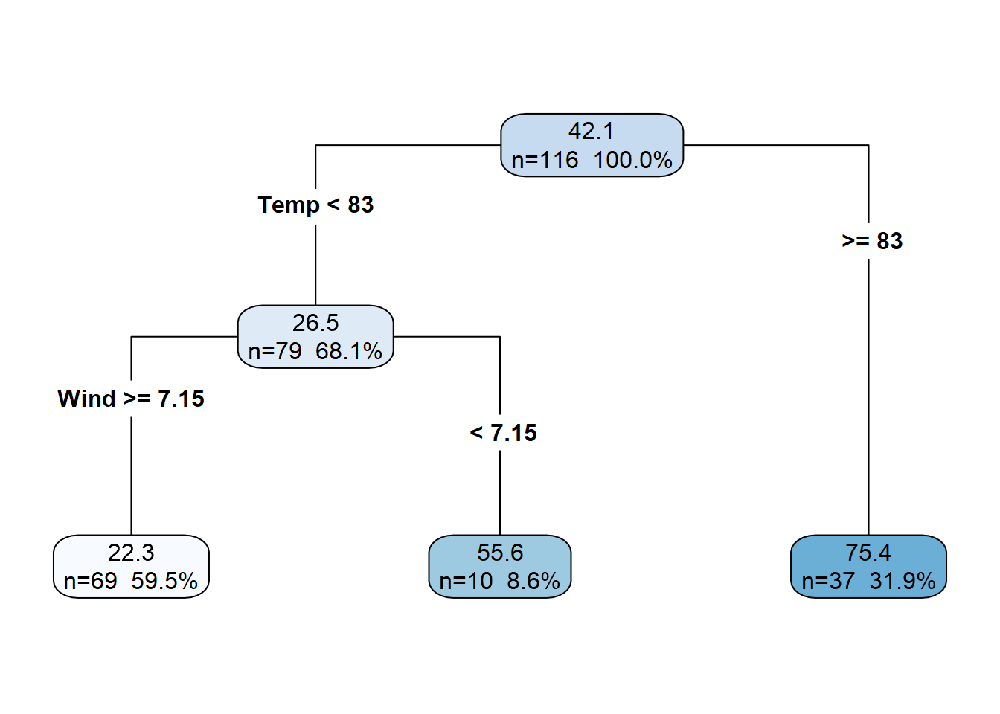
- Continuing the process once more, we see that the third split is again on
Tempbut at a different \(t_k\).
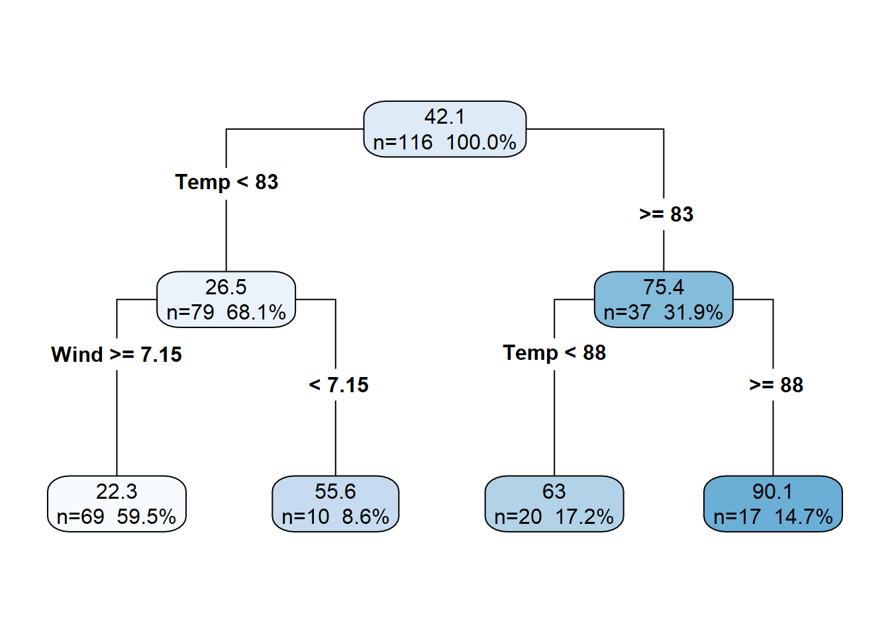
If we continued to repeat the process until each observation was in its own node, then we would have drastically over-fit the model. To control over-fitting, we stop the splitting process when some user-defined condition (or set of conditions) is met. Example stopping conditions include a minimum number of observations in a node or a maximum depth of the tree. We can also use cross validation with a 1 standard error rule to limit the complexity of the final model.
We’ll stop at this point and visually represent this model as a scatter plot. The above leaves from left to right are labeled as Leaf 1 - 4 on the scatter plot.
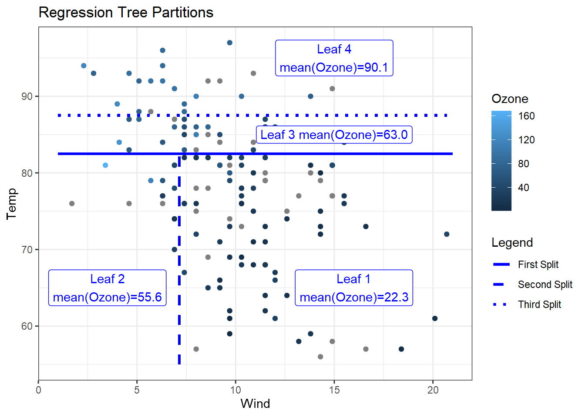
Plotting predicted Ozone on the z-axis produces the following response surface, which highlights the step-like characteristic of regression tree predictions.
Plotting just Temp versus Ozone in two dimensions further highlights a difference between this method and linear regression. From this plot we can infer that linear regression may outperform CART if there is a smooth trend in the relationship between the predictors and response because CART does not produce smooth estimates.
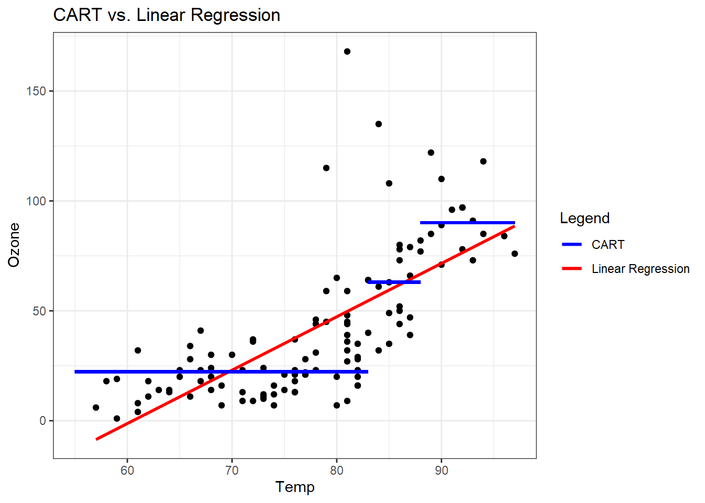
Impurity Measure
Previously, it was stated that the predictor-threshold pair chosen for a split was the pair that most increased the purity (or, decreased the impurity) of the child nodes. A node with all identical response values will have an impurity of 0, so that as a node becomes more impure, it’s impurity value increases. We will then define a node’s impurity to be proportional to the residual deviance, which for a continuous response variable like Ozone, is the residual sum of squares (RSS).
\[RSS = \sum\limits_{i\:in\: Node}{(y_{i} - \bar{y})^2}\]
where \(\bar{y}\) is the mean of the y’s in the node.
We’ll start with the first split. To determine which predictor-threshold pair decreases impurity the most, start with the first factor, send the lowest Ozone value to the left node and the remainder to the right node, and calculate RSS for each child node (\(RSS_{left}\) and \(RSS_{right}\)). The decrease in impurity for this split is \(RSS_{root} - (RSS_{left} + RSS_{right})\). Then send the lowest two Ozone values to the left node and the remainder to the right. Repeat this process for each predictor-threshold pair, and split the data based using the pair that decreased impurity the most. Any regression tree package will iterate through all of these combinations for you, but to demonstrate the process explicitly, We’ll just consider the Temp predictor for the first split.
# we'll do a lot of filtering, so convert dataframe to tibble for convenience
# we'll also drop the NA's for the calculations (but the regression tree
# methodology itself doesn't care if there are NA's or not)
aq = as_tibble(airquality) %>% drop_na(Ozone)
# root node deviance
root_dev = sum((aq$Ozone - mean(aq$Ozone))^2)
# keep track of the highest decrease
best_split = 0
# iterate through all the unique Temp values
for(s in sort(unique(aq$Temp))){
left_node = aq %>% filter(Temp <= s) %>% .$Ozone
left_dev = sum((left_node - mean(left_node))^2)
right_node = aq %>% filter(Temp > s) %>% .$Ozone
right_dev = sum((right_node - mean(right_node))^2)
split_dev = root_dev - (left_dev + right_dev)
if(split_dev > best_split){
best_split = split_dev
temp = s + 1} # + 1 because we filtered Temp <= s and Temp is integer
}
print(paste("Best split at Temp <", temp), quote=FALSE)[1] Best split at Temp < 83Tree Deviance
Armed with our impurity measure, we can also calculate the tree deviance, which we’ll use to calculate the regression tree equivalent of \(R^2\). For the tree with the four leaf nodes, we calculate the deviance for each leaf.
# leaf 1
leaf_1 = aq %>% filter(Temp < 83 & Wind >= 7.15) %>% .$Ozone
leaf_1_dev = sum((leaf_1 - mean(leaf_1))^2)
# leaf 2
leaf_2 = aq %>% filter(Temp < 83 & Wind < 7.15) %>% .$Ozone
leaf_2_dev = sum((leaf_2 - mean(leaf_2))^2)
# leaf 3
leaf_3 = aq %>% filter(Temp >= 83 & Temp < 88) %>% drop_na(Ozone) %>% .$Ozone
leaf_3_dev = sum((leaf_3 - mean(leaf_3))^2)
# leaf 4
leaf_4 = aq %>% filter(Temp >= 88) %>% drop_na(Ozone) %>% .$Ozone
leaf_4_dev = sum((leaf_4 - mean(leaf_4))^2)The tree deviance is the sum of the leaf node deviances, which we use to determine how much the entire tree decreases the root deviance.
tree_dev = sum(leaf_1_dev, leaf_2_dev, leaf_3_dev, leaf_4_dev)
(root_dev - tree_dev) / root_dev[1] 0.6119192The tree decreases the root deviance by 61.2%, which also means that 61.2% of the variability in Ozone is explained by the tree.
Prediction
Making a prediction with a new value is easy as following the logic of the decision tree until you end up in a leaf node. The mean of the response values for that leaf node is the prediction for the new value.
Pros And Cons
Regression trees have a lot of good things going for them:
- They are easy to explain combined with an intuitive graphic output
- They can handle categorical and numeric predictor and response variables
- They easily handle missing data
- They are robust to outliers
- They make no assumptions about normality
- They can accommodate “wide” data (more predictors than observations)
- They automatically include interactions
Regression trees by themselves and as presented so far have two major drawbacks:
- They do not tend to perform as well as other methods (but there’s a plan for this that makes them one of the best prediction methods around)
- They do not capture simple additive structure (there’s a plan for this, too)
Regression Trees in R
The regression trees shown above were grown using the rpart and rpart.plot packages. I didn’t show the code so that we could focus on the algorithm first. Growing a regression tree is as easy as a linear model. The object created by rpart() contains some useful information.
library(rpart)
library(rpart.plot)
aq.tree = rpart(Ozone ~ ., data=airquality)
aq.treen=116 (37 observations deleted due to missingness)
node), split, n, deviance, yval
* denotes terminal node
1) root 116 125143.1000 42.12931
2) Temp< 82.5 79 42531.5900 26.54430
4) Wind>=7.15 69 10919.3300 22.33333
8) Solar.R< 79.5 18 777.1111 12.22222 *
9) Solar.R>=79.5 51 7652.5100 25.90196
18) Temp< 77.5 33 2460.9090 21.18182 *
19) Temp>=77.5 18 3108.4440 34.55556 *
5) Wind< 7.15 10 21946.4000 55.60000 *
3) Temp>=82.5 37 22452.9200 75.40541
6) Temp< 87.5 20 12046.9500 62.95000
12) Wind>=8.9 7 617.7143 45.57143 *
13) Wind< 8.9 13 8176.7690 72.30769 *
7) Temp>=87.5 17 3652.9410 90.05882 *First, we see that the NAs were deleted, and then we see the tree structure in a text format that includes the node number, how the node was split, the number of observations in the node, the deviance, and the mean response. To plot the tree, use rpart.plot() or prp().
rpart.plot(aq.tree)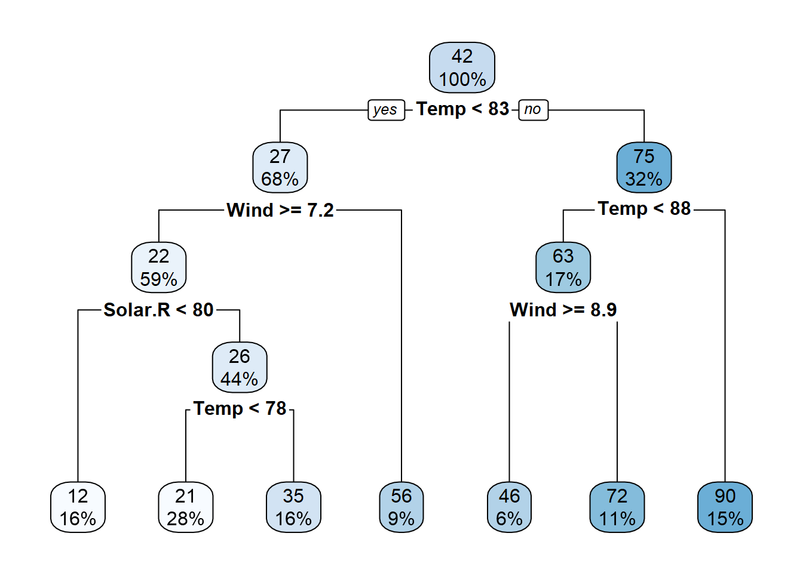
rpart.plot() provides several options for customizing the plot, among them are digits, type, and extra, which I invoked to produce the earlier plots. Refer to the help to see all of the options.
rpart.plot(aq.tree, digits = 3, type=4, extra=101)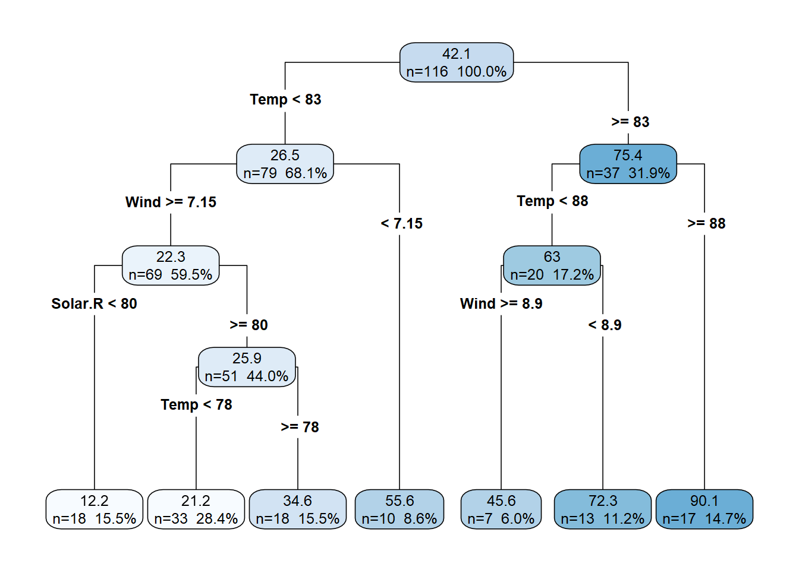
Another useful function is printcp(), which provides a deeper glimpse into what’s going on in the algorithm. Here we see that just three predictors were used to grow the tree (Solar.R, Temp, and Wind). This means that the other predictors did not significantly contribute to increasing node purity, which is equivalent to a predictor in a linear model with a high p-value. We also see the root node error (weighted by the number of observations in the root node).
In the table, printcp() provides optimal tuning based on a complexity parameter (CP), which we can manipulate to manually “prune” the tree, if desired. The relative error column is the amount of reduction in root deviance for each split. For example, in our earlier example with three splits and four leaf nodes, we had a 61.2% reduction in root deviance, and below we see that at an nsplit of 3, we also get \(1.000 - 0.388 = 61.2\)%.1 xerror and xstd are cross-validation error and standard deviation, respectfully, so we get cross validation built-in for free!
printcp(aq.tree)
Regression tree:
rpart(formula = Ozone ~ ., data = airquality)
Variables actually used in tree construction:
[1] Solar.R Temp Wind
Root node error: 125143/116 = 1078.8
n=116 (37 observations deleted due to missingness)
CP nsplit rel error xerror xstd
1 0.480718 0 1.00000 1.01137 0.16829
2 0.077238 1 0.51928 0.56189 0.17935
3 0.053962 2 0.44204 0.60667 0.18095
4 0.025990 3 0.38808 0.52541 0.15202
5 0.019895 4 0.36209 0.50832 0.14892
6 0.016646 5 0.34220 0.48282 0.13541
7 0.010000 6 0.32555 0.47948 0.13535With plotcp() we can see the 1 standard error rule implemented in the same manner we’ve seen before to identify the best fit model. At the top of the plot, the number of splits is displayed so that we can choose two splits when defining the best fit model.
plotcp(aq.tree, upper = "splits")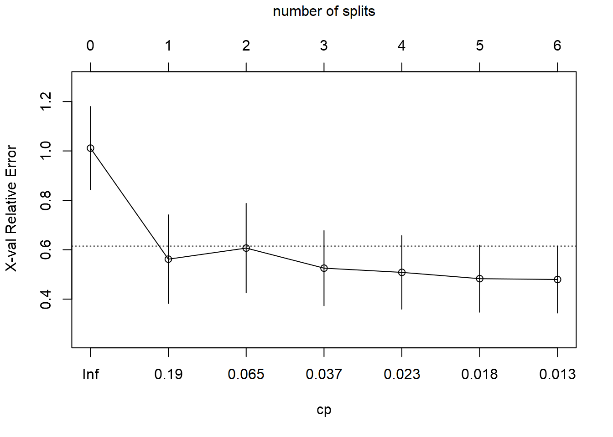
Specify the best fit model using the cp parameter with a value slightly greater than shown in the table.
best_aq.tree = rpart(Ozone ~ ., cp=0.055, data=airquality)
rpart.plot(best_aq.tree)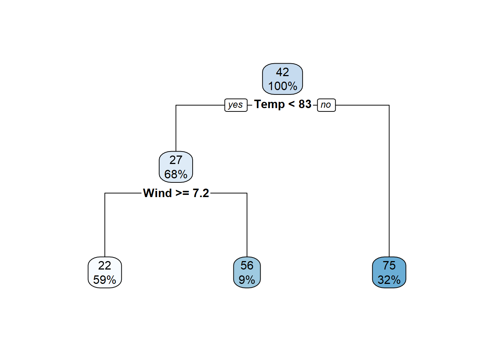
As with lm() objects, the summary() function provides a wealth of information. Note the results following variable importance. Earlier we opined that the first split on Temp indicated that is was the most significant predictor followed by Wind. The rpart documentation provides a detailed description of variable importance:
An overall measure of variable importance is the sum of the goodness of split measures for each split for which it was the primary variable, plus goodness * (adjusted agreement) for all splits in which it was a surrogate.
Note that the results are scaled so that they sum to 100, which is useful for directly comparing each predictor’s relative contribution.
summary(aq.tree)Call:
rpart(formula = Ozone ~ ., data = airquality)
n=116 (37 observations deleted due to missingness)
CP nsplit rel error xerror xstd
1 0.48071820 0 1.0000000 1.0113676 0.1682859
2 0.07723849 1 0.5192818 0.5618853 0.1793542
3 0.05396246 2 0.4420433 0.6066727 0.1809490
4 0.02598999 3 0.3880808 0.5254143 0.1520220
5 0.01989493 4 0.3620909 0.5083200 0.1489209
6 0.01664620 5 0.3421959 0.4828189 0.1354091
7 0.01000000 6 0.3255497 0.4794807 0.1353517
Variable importance
Temp Wind Day Solar.R Month
60 28 8 2 2
Node number 1: 116 observations, complexity param=0.4807182
mean=42.12931, MSE=1078.819
left son=2 (79 obs) right son=3 (37 obs)
Primary splits:
Temp < 82.5 to the left, improve=0.48071820, (0 missing)
Wind < 6.6 to the right, improve=0.40426690, (0 missing)
Solar.R < 153 to the left, improve=0.21080020, (5 missing)
Month < 6.5 to the left, improve=0.11595770, (0 missing)
Day < 24.5 to the left, improve=0.08216807, (0 missing)
Surrogate splits:
Wind < 6.6 to the right, agree=0.776, adj=0.297, (0 split)
Day < 10.5 to the right, agree=0.724, adj=0.135, (0 split)
Node number 2: 79 observations, complexity param=0.07723849
mean=26.5443, MSE=538.3746
left son=4 (69 obs) right son=5 (10 obs)
Primary splits:
Wind < 7.15 to the right, improve=0.22726310, (0 missing)
Temp < 77.5 to the left, improve=0.22489660, (0 missing)
Day < 24.5 to the left, improve=0.13807170, (0 missing)
Solar.R < 153 to the left, improve=0.10449720, (2 missing)
Month < 8.5 to the right, improve=0.01924449, (0 missing)
Node number 3: 37 observations, complexity param=0.05396246
mean=75.40541, MSE=606.8356
left son=6 (20 obs) right son=7 (17 obs)
Primary splits:
Temp < 87.5 to the left, improve=0.300763900, (0 missing)
Wind < 10.6 to the right, improve=0.273929800, (0 missing)
Solar.R < 273.5 to the right, improve=0.114526900, (3 missing)
Day < 6.5 to the left, improve=0.048950680, (0 missing)
Month < 7.5 to the left, improve=0.007595265, (0 missing)
Surrogate splits:
Wind < 6.6 to the right, agree=0.676, adj=0.294, (0 split)
Month < 7.5 to the left, agree=0.649, adj=0.235, (0 split)
Day < 27.5 to the left, agree=0.622, adj=0.176, (0 split)
Node number 4: 69 observations, complexity param=0.01989493
mean=22.33333, MSE=158.2512
left son=8 (18 obs) right son=9 (51 obs)
Primary splits:
Solar.R < 79.5 to the left, improve=0.22543670, (1 missing)
Temp < 77.5 to the left, improve=0.21455360, (0 missing)
Day < 27 to the left, improve=0.05183544, (0 missing)
Wind < 10.6 to the right, improve=0.04850548, (0 missing)
Month < 8.5 to the right, improve=0.01998100, (0 missing)
Surrogate splits:
Temp < 63.5 to the left, agree=0.794, adj=0.222, (1 split)
Wind < 16.05 to the right, agree=0.750, adj=0.056, (0 split)
Node number 5: 10 observations
mean=55.6, MSE=2194.64
Node number 6: 20 observations, complexity param=0.02598999
mean=62.95, MSE=602.3475
left son=12 (7 obs) right son=13 (13 obs)
Primary splits:
Wind < 8.9 to the right, improve=0.269982600, (0 missing)
Month < 7.5 to the right, improve=0.078628670, (0 missing)
Day < 18.5 to the left, improve=0.073966850, (0 missing)
Solar.R < 217.5 to the left, improve=0.058145680, (3 missing)
Temp < 85.5 to the right, improve=0.007674142, (0 missing)
Node number 7: 17 observations
mean=90.05882, MSE=214.8789
Node number 8: 18 observations
mean=12.22222, MSE=43.17284
Node number 9: 51 observations, complexity param=0.0166462
mean=25.90196, MSE=150.0492
left son=18 (33 obs) right son=19 (18 obs)
Primary splits:
Temp < 77.5 to the left, improve=0.27221870, (0 missing)
Wind < 10.6 to the right, improve=0.09788213, (0 missing)
Day < 22.5 to the left, improve=0.07292523, (0 missing)
Month < 8.5 to the right, improve=0.04981065, (0 missing)
Solar.R < 255 to the right, improve=0.03603008, (1 missing)
Surrogate splits:
Month < 6.5 to the left, agree=0.686, adj=0.111, (0 split)
Wind < 10.6 to the right, agree=0.667, adj=0.056, (0 split)
Node number 12: 7 observations
mean=45.57143, MSE=88.2449
Node number 13: 13 observations
mean=72.30769, MSE=628.9822
Node number 18: 33 observations
mean=21.18182, MSE=74.573
Node number 19: 18 observations
mean=34.55556, MSE=172.6914 The best fit model contains two predictors and explains 55.8% of the variance in Ozone as shown below.
printcp(best_aq.tree)
Regression tree:
rpart(formula = Ozone ~ ., data = airquality, cp = 0.055)
Variables actually used in tree construction:
[1] Temp Wind
Root node error: 125143/116 = 1078.8
n=116 (37 observations deleted due to missingness)
CP nsplit rel error xerror xstd
1 0.480718 0 1.00000 1.01076 0.16854
2 0.077238 1 0.51928 0.59931 0.18107
3 0.055000 2 0.44204 0.66824 0.18089How does it compare to a linear model with the same two predictors? The linear model explains 56.1% of the variance in Ozone, which is only slightly more than the regression tree. Earlier I claimed there was a plan for improving the performance of regression trees. That plan is revealed in the next section on Random Forests.
summary(lm(Ozone~Wind + Temp, data=airquality))
Call:
lm(formula = Ozone ~ Wind + Temp, data = airquality)
Residuals:
Min 1Q Median 3Q Max
-41.251 -13.695 -2.856 11.390 100.367
Coefficients:
Estimate Std. Error t value Pr(>|t|)
(Intercept) -71.0332 23.5780 -3.013 0.0032 **
Wind -3.0555 0.6633 -4.607 1.08e-05 ***
Temp 1.8402 0.2500 7.362 3.15e-11 ***
---
Signif. codes: 0 '***' 0.001 '**' 0.01 '*' 0.05 '.' 0.1 ' ' 1
Residual standard error: 21.85 on 113 degrees of freedom
(37 observations deleted due to missingness)
Multiple R-squared: 0.5687, Adjusted R-squared: 0.5611
F-statistic: 74.5 on 2 and 113 DF, p-value: < 2.2e-16Random Forest Regression
In 1994, Leo Breiman at UC, Berkeley published this paper in which he presented a method he called Bootstrap AGGregation (or BAGGing) that improves the predictive power of regression trees by growing many trees (a forest) using bootstrapping techniques (thereby making it a random forest). The details are explained in the link to the paper above, but in short, we grow many trees, each on a bootstrapped sample of the training set (i.e., sample \(n\) times with replacement from a data set of size \(n\)). Then, to make a prediction, we either let each tree “vote” and predict based on the most votes, or we use the average of the estimated responses. Cross-validation isn’t necessary with this method because each bootstrapped tree has an internal error, referred to as the out-of-bag (OOB) error. With this method, about a third of the samples are left out of the bootstrapped sample, a prediction is made, and the OOB error calculated. The algorithm stops when the OOB error begins to increase.
A drawback of the method is that larger trees tend to be correlated with each other, and so in a 2001 paper, Breiman developed a method to lower the correlation between trees. For each bootstrapped sample, his idea was to use a random selection of predictors to split each node. The number of randomly selected predictors, mtry, is a function of the total number of predictors in the data set. For regression, the randomForest() function from the randomForest package uses \(1/k\) as the default mtry value, but this can be manually specified. The following code chunks demonstrate the use of some of the randomForest functions. First, we fit a random forest model and specify that we want to assess the importance of predictors, omit NAs, and randomly sample two predictors at each split (mtry). There are a host of other parameters that can be specified, but we’ll keep them all at their default settings for this example.
library(randomForest)
set.seed(42)
aq.rf<- randomForest(Ozone~., importance=TRUE, na.action=na.omit, mtry=2, data=airquality)
aq.rf
Call:
randomForest(formula = Ozone ~ ., data = airquality, importance = TRUE, mtry = 2, na.action = na.omit)
Type of random forest: regression
Number of trees: 500
No. of variables tried at each split: 2
Mean of squared residuals: 301.7377
% Var explained: 72.5This random forest model consists of 500 trees and explains 72.% of the variance in Ozone, which is a nice improvement over the 55.8% we got with the single regression tree. Plotting the aq.rf object shows the error as a function of the size of the forest. We want to see the error stabilize as the number of trees increases, which it does in the plot below.
plot(aq.rf)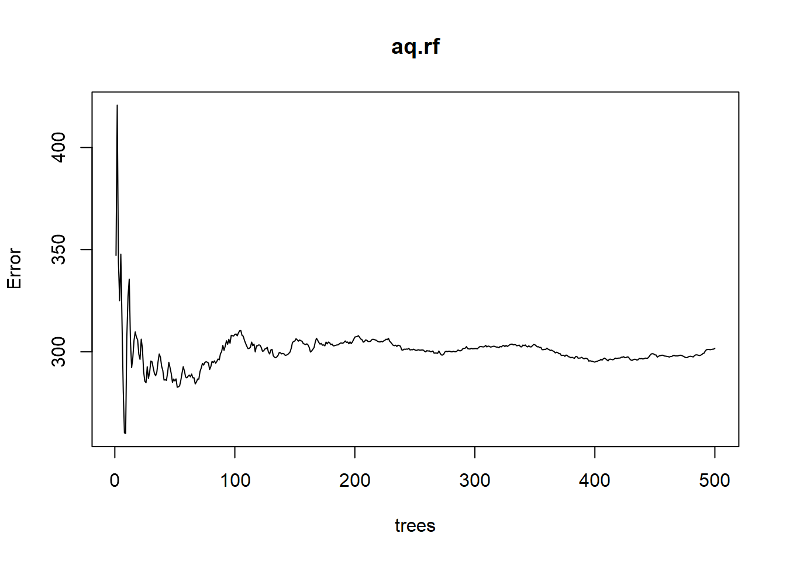
Interpretation
When the relationships between predictors and response are non-linear and complex, random forest models generally perform better than standard linear models. However, the increase in predictive power comes with a corresponding decrease in interpretability. For this reason, random forests and some other machine learning-based models such as neural networks are sometimes referred to as “black box” models. If you are applying machine learning techniques to build a model that performs optical character recognition, you might not be terribly concerned about the interpretability of your model. However, if your model will be used to inform a decision maker, interpretability is much more important - especially if you are asked to explain the model to the decision maker. In fact, some machine learning practitioners argue against using black box models for all high stakes decision making. For example, read this paper by Cynthia Rudin, a computer scientist at Duke University. Recently, advancements have been made in improving the interpretability of some types of machine learning models (for example, download and read this paper from h2o.ai or this e-book by Christoph Molnar, a Ph.D. candidate at the University of Munich), and we will explore these techniques below.
Linear models have coefficients (the \(\beta\)s) that explain the nature of the relationship between predictors and the response. Classification and regression trees have an analogous concept of variable importance, which can be extended to random forest models. The documentation for importance() from the randomForest package provides the following definitions of two variable importance measures:
The first measure is computed from permuting OOB data: For each tree, the prediction error on the out-of-bag portion of the data is recorded (error rate for classification, MSE for regression). Then the same is done after permuting each predictor variable. The difference between the two are then averaged over all trees, and normalized by the standard deviation of the differences. If the standard deviation of the differences is equal to 0 for a variable, the division is not done (but the average is almost always equal to 0 in that case).
The second measure is the total decrease in node impurities from splitting on the variable, averaged over all trees. For classification, the node impurity is measured by the Gini index. For regression, it is measured by residual sum of squares.
These two measures can be accessed with:
importance(aq.rf) %IncMSE IncNodePurity
Solar.R 13.495267 15939.238
Wind 19.989633 39498.922
Temp 37.489127 48112.583
Month 4.053344 4160.278
Day 3.052987 9651.722Alternatively, we can plot variable importance with varImpPlot().
varImpPlot(aq.rf)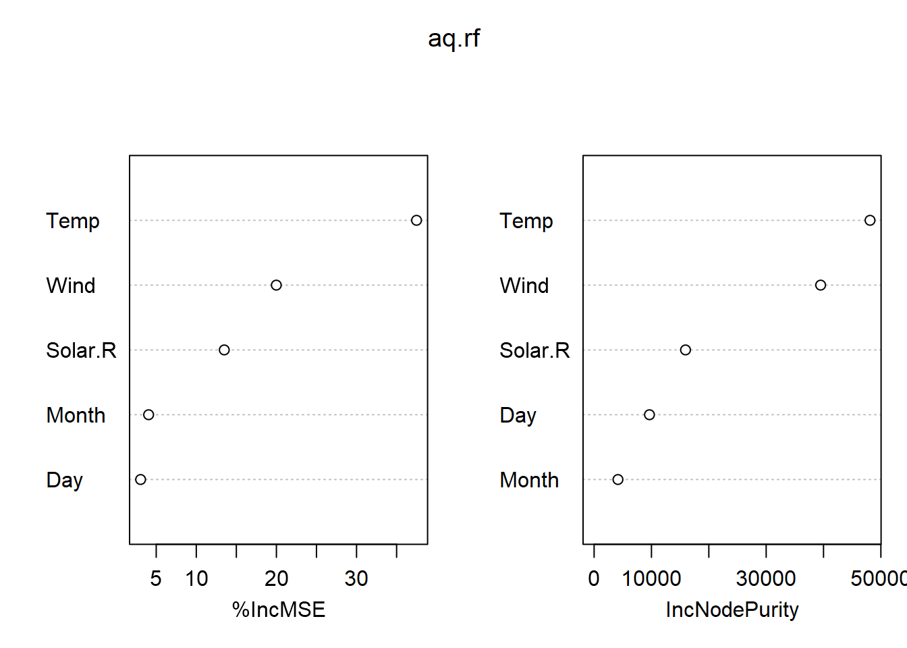
Variable importance can be related to a linear model coefficient in that a large variable importance value is akin to a large coefficient value. However, it doesn’t indicate whether the coefficient is positive or negative. For example, from the above plot, we see that Temp is an important predictor of Ozone, but we don’t know if increasing temperatures result in increasing or decreasing ozone measurements (or if it’s a non-linear relationship). Partial dependence plots (PDP) were developed to solve this problem, and they can be interpreted in the same way as a loess or spline smoother.
For the airquality data, one would expect that increasing temperatures would increase ozone concentrations, and that increasing wind speed would decrease ozone concentrations. The partialPlot() function provided with the randomForest package produces PDPs, but they are basic and difficult to customize. Instead, we’ll use the pdp package, which works nicely with ggplot2 and includes a loess smoother (another option is the iml package - for interpretable machine learning - which we’ll also explore).
#library(pdp)
p3 = aq.rf %>%
pdp::partial(pred.var = "Temp") %>% # from the pdp package
autoplot(smooth = TRUE, ylab = expression(f(Temp))) +
theme_bw() +
ggtitle("Partial Dependence of Temp")
p4 = aq.rf %>%
pdp::partial(pred.var = "Wind") %>%
autoplot(smooth = TRUE, ylab = expression(f(Temp))) +
theme_bw() +
ggtitle("Partial Dependence of Wind")
gridExtra::grid.arrange(p3, p4, ncol=2)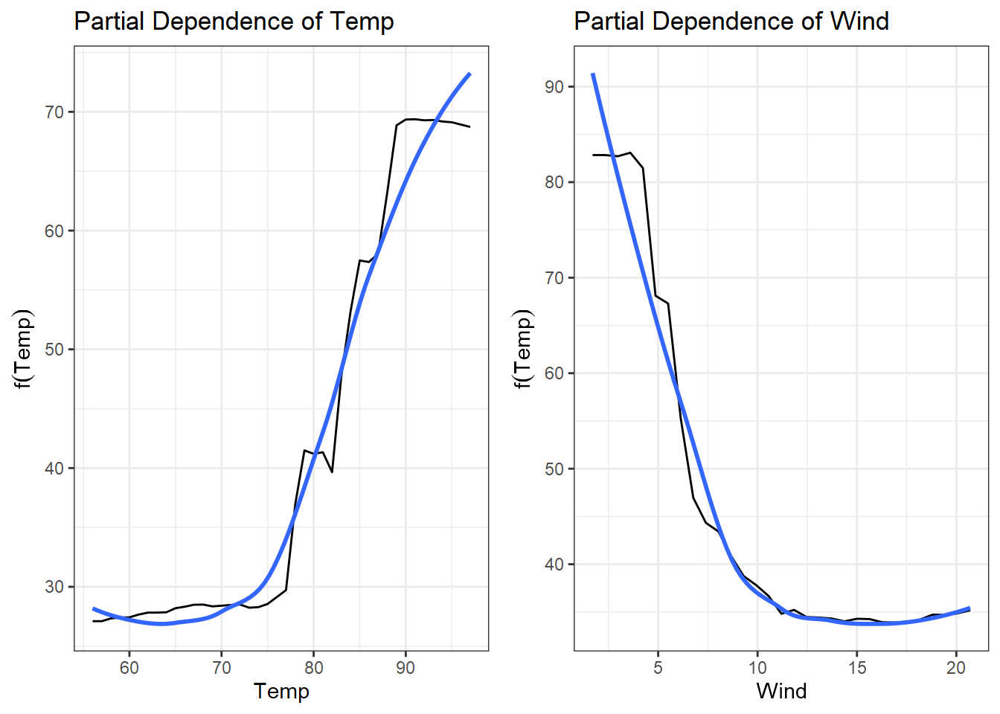
Earlier, we produced a response surface plot based on a regression tree. Now we can produce a response surface based on the random forest model, which looks similar but more detailed. Specifying chull = TRUE (chull stands for convex hull) limits the plot to the range of values in the training data set, which prevents predictions being shown for regions in which there is no data. A 2D heat map and a 3D mesh are shown below.
# Compute partial dependence data for Wind and Temp
pd = pdp::partial(aq.rf, pred.var = c("Wind", "Temp"), chull = TRUE)
# Default PDP
pdp1 = pdp::plotPartial(pd)
# 3-D surface
pdp2 = pdp::plotPartial(pd, levelplot = FALSE, zlab = "Ozone",
screen = list(z = -20, x = -60))
gridExtra::grid.arrange(pdp1, pdp2, ncol=2)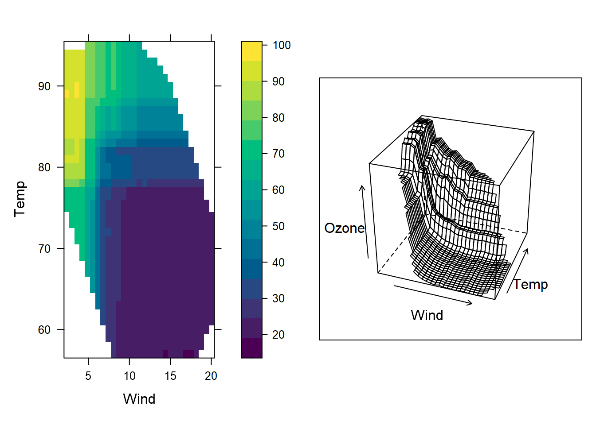
The iml package was developed by Christoph Molnar, the Ph.D. candidate referred to earlier, and contains a number of useful functions to aid in model interpretation. In machine learning vernacular, predictors are commonly called features, so instead of variable importance, we’ll get feature importance. With this package, we can calculate feature importance and produce PDPs as well, and a grid of partial dependence plots are shown below. Note the addition of a rug plot at the bottom of each subplot, which helps identify regions where observations are sparse and where the model might not perform as well.
# library(iml) # for interpretable machine learning
# library(patchwork) # for arranging plots - similar to gridExtra
# iml doesn't like NAs, so we'll drop them from the data and re-fit the model
aq = airquality %>% drop_na()
aq.rf2 = randomForest(Ozone~., importance=TRUE, na.action=na.omit, mtry=2, data=aq)
# provide the random forest model, the features, and the response
predictor = iml::Predictor$new(aq.rf2, data = aq[, 2:6], y = aq$Ozone)
PDP = iml::FeatureEffects$new(predictor, method='pdp')
PDP$plot() & theme_bw()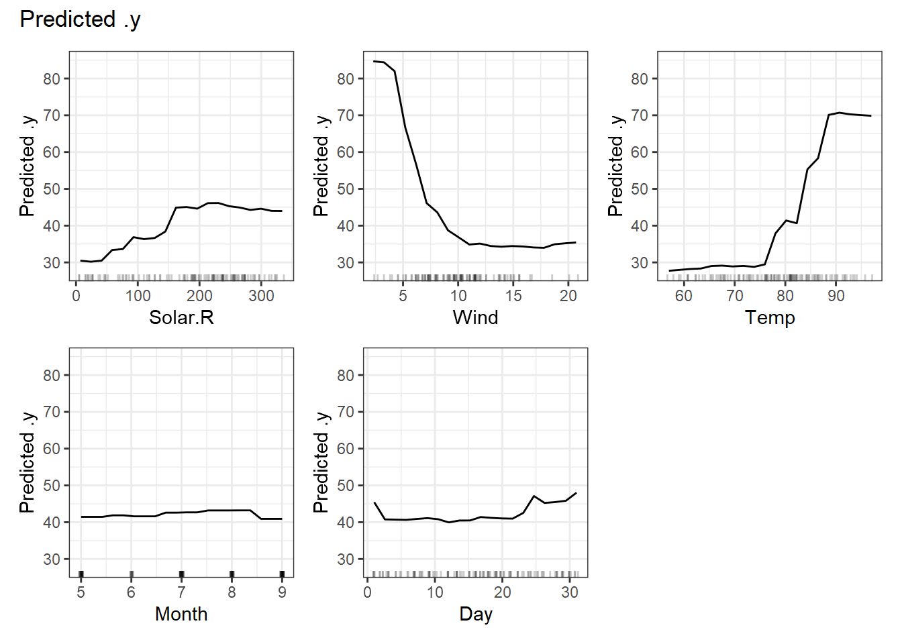
PDPs show the average feature effect, but if we’re interested in the effect for one or more individual observations, then an Individual Conditional Expectation (ICE) plot is useful. In the following plot, each black line represents one of the 111 observations in the data set, and the global partial dependence is shown in yellow. Since the individual lines are generally parallel, we can see that each individual observation follows the same general trend: increasing temperatures have little effect on ozone until around 76 degrees, at which point all observations increase. In the mid 80s, there are a few observations that have a decreasing trend while the majority continue to increase, which indicates temperature may be interacting with one or more other features. Generally speaking, however, since the individual lines are largely parallel, we can conclude that the partial dependence measure is a good representation of the whole data set.
ice = iml::FeatureEffect$new(predictor, feature = "Temp", method='pdp+ice')
ice$plot() + theme_bw()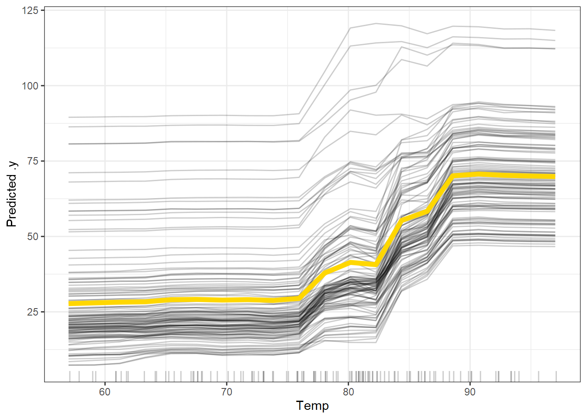
One of the nice attributes of tree-based models is their ability to capture interactions. The interaction effects can be explicitly measured and plotted as shown below. The x-axis scale is the percent of variance explained by interaction for each feature, so Wind, Temp, and Solar.R all have more than 10% of their variance explained by an interaction.
interact = iml::Interaction$new(predictor)
plot(interact) + theme_bw()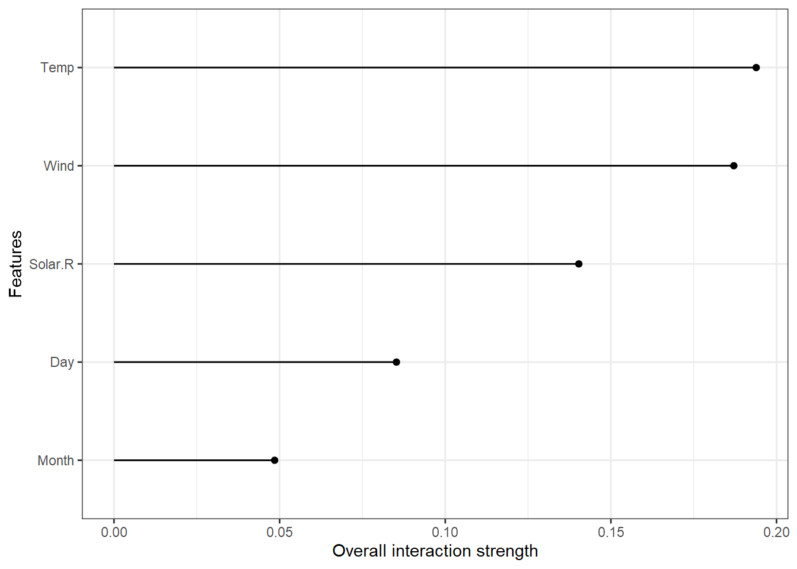
To identify what the feature is interacting with, just specify the feature name. For example, Temp interactions are shown below.
interact = iml::Interaction$new(predictor, feature='Temp')
plot(interact) + theme_bw()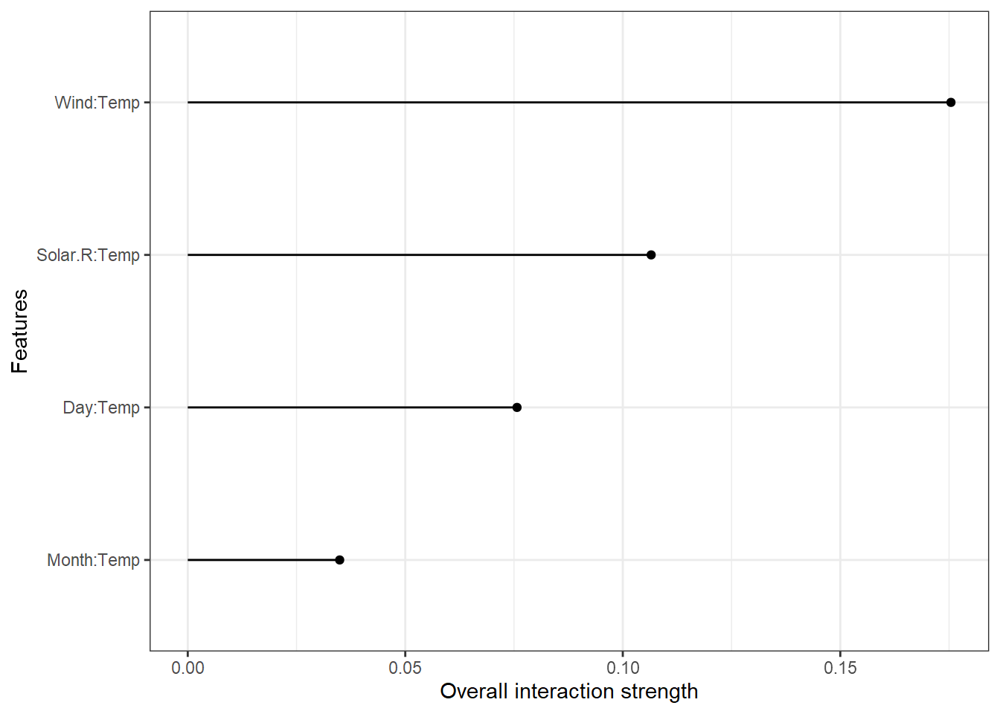
Predictions
Predictions for new data are made the usual way with predict(), which is demonstrated below using the first two rows of the airquality data set.
predict(aq.rf, airquality[1:2, c(2:6)]) 1 2
38.50243 31.39827 Random Forest Classification
For a classification example, we’ll skip over simple classification trees and jump straight to random forests. There is very little difference in syntax with the randomForest() function when performing classification instead of regression. For this demonstration, we’ll use the iris data set so we can compare results with the SVC results. We’ll use the same training and test sets as earlier.
set.seed(0)
train = caTools::sample.split(iris, SplitRatio = 0.8)
iris_train = subset(iris, train == TRUE)
iris_test = subset(iris, train == FALSE)
iris.rf <- randomForest(Species ~ ., data=iris_train, importance=TRUE)
print(iris.rf)
Call:
randomForest(formula = Species ~ ., data = iris_train, importance = TRUE)
Type of random forest: classification
Number of trees: 500
No. of variables tried at each split: 2
OOB estimate of error rate: 5%
Confusion matrix:
setosa versicolor virginica class.error
setosa 40 0 0 0.000
versicolor 0 37 3 0.075
virginica 0 3 37 0.075The model seems to have a little trouble distinguishing virginica from versicolor. The linear SVC misclassified two observations in the test set, and the radial SVC misclassified one. Before we see how the random forest does, let’s make sure we grew enough trees. We can make a visual check by plotting the random forest object.
plot(iris.rf)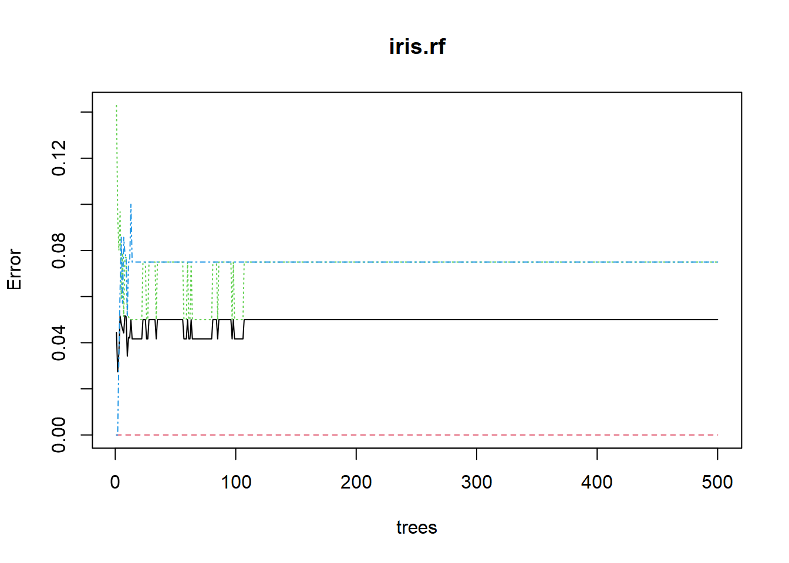
No issue there! Looks like 500 trees was plenty. Taking a look at variable importance shows that petal width and length are far more important than sepal width and length.
varImpPlot(iris.rf)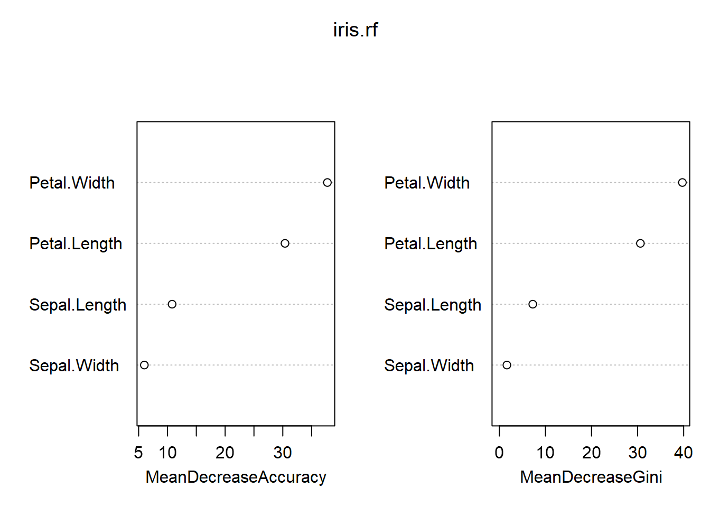
Since the response variable is categorical with three levels, a little work is required to get partial dependence plots for each predictor-response combination. Below are the partial dependence plots for Petal.Width for each species. The relationship between petal width and species varies significantly based on the species, which is what makes petal width have a high variable importance.
as_tibble(iris.rf %>%
# which.class refers to the factor level
pdp::partial(pred.var = "Petal.Width", which.class=1) %>%
mutate(Species = levels(iris$Species)[1])) %>%
bind_rows(as_tibble(iris.rf %>%
pdp::partial(pred.var = "Petal.Width", which.class=2) %>%
mutate(Species = levels(iris$Species)[2]))) %>%
bind_rows(as_tibble(iris.rf %>%
pdp::partial(pred.var = "Petal.Width", which.class=3) %>%
mutate(Species = levels(iris$Species)[3]))) %>%
ggplot() +
geom_line(aes(x=Petal.Width, y=yhat, col=Species), size=1.5) +
ggtitle("Partial Dependence of Petal.Width") +
theme_bw()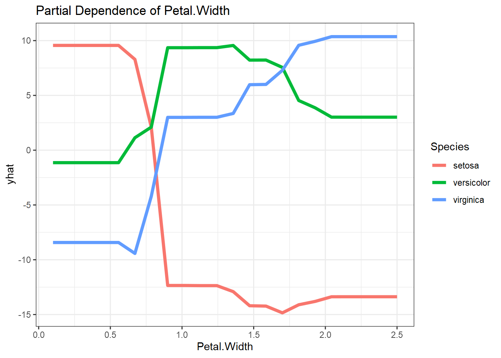
Enough visualizing. Time to get the confusion matrix for the random forest model using the test set.
# get the confusion matrix
rf_conf_mat = cvms::confusion_matrix(
targets = iris_test[, 5],
predictions = predict(iris.rf, newdata = iris_test[-5]))
# plot the confusion matrix
cvms::plot_confusion_matrix(rf_conf_mat$`Confusion Matrix`[[1]]) +
ggtitle("Random Forest")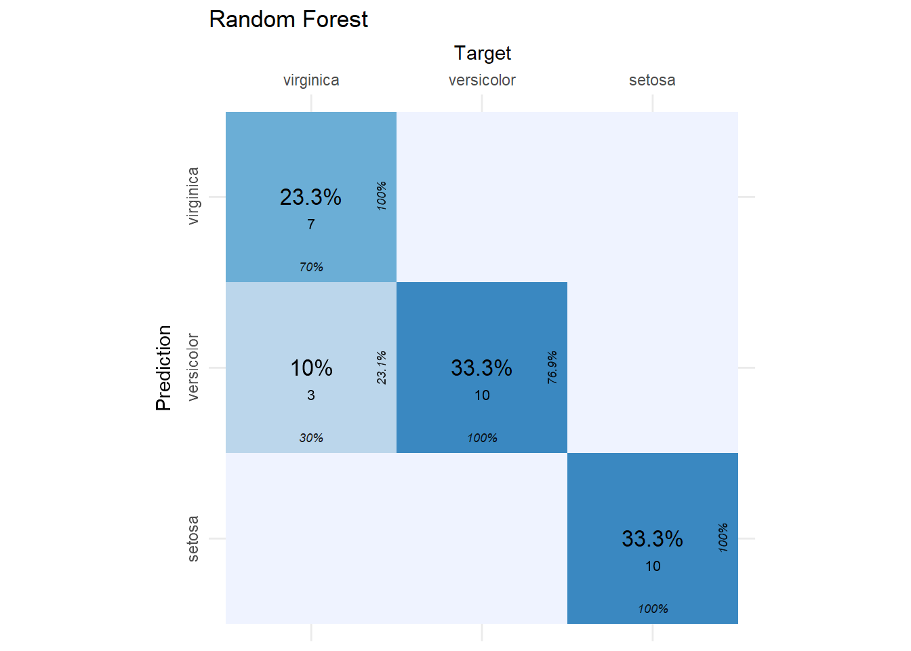
Footnotes
It’s always nice to see that I didn’t mess up the manual calculations.↩︎